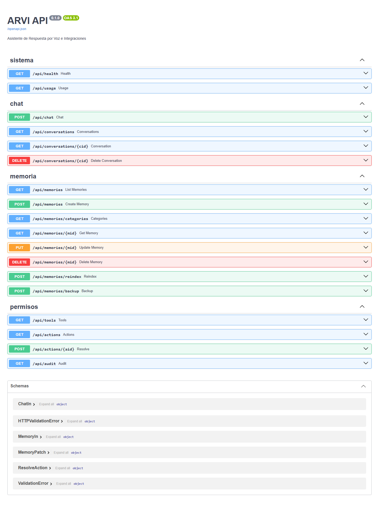
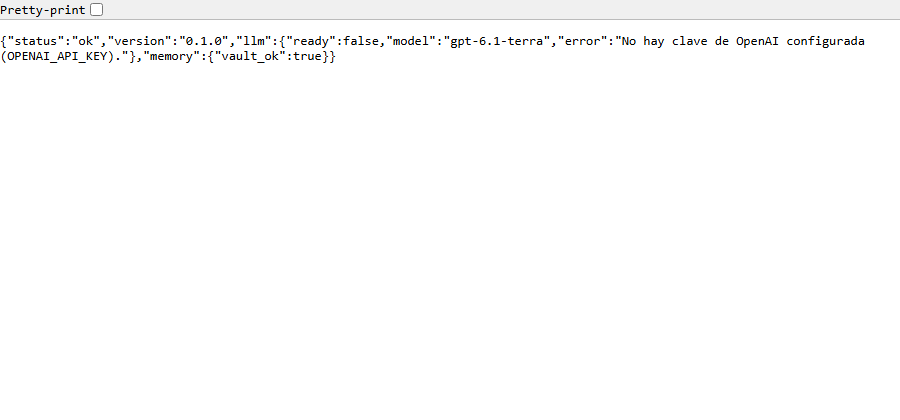

8. Desarrollo del backend¶
8.1 Organización del código¶
backend/arvi/
├── api/ main.py (rutas), security.py (token, rate limit), services.py (composición)
├── core/ agent.py (orquestación de cada turno)
├── providers/llm base.py (interfaz), openai_provider.py, fake.py (pruebas)
├── memory/ vault.py (Markdown+YAML), service.py (CRUD, FTS5), secrets_filter.py
├── tools/ base.py (registro y ejecutor), memory_tools.py, system_tools.py
├── security/ permissions.py (niveles 0-3)
├── storage/ db.py (SQLite)
├── schemas/ api.py (modelos de entrada)
└── config.py configuración por variables de entorno
config/ personality.yaml, permissions.yaml, apps.yaml (editables sin tocar código)
tests/ unit/ e integration/
Se agrupan en backend/arvi/ los paquetes previstos en el enunciado (api, core, providers,
memory, tools, security, schemas) para que formen un único paquete Python importable.
8.2 Configuración¶
config.py usa pydantic-settings: cada opción se lee de una variable de entorno o del archivo
.env, que Git ignora. Los secretos se declaran como SecretStr, así que no aparecen al imprimir la
configuración ni en los registros.
8.3 Composición de servicios¶
services.py construye explícitamente los objetos y los conecta (inyección de dependencias
manual). Así las pruebas pueden sustituir el proveedor LLM por uno falso:
def build_services(settings: Settings, llm: LLMProvider | None = None, ...) -> Services:
if settings.vault_inside_repo():
raise RuntimeError("ARVI_VAULT_PATH no puede estar dentro del repositorio Git.")
db = Database(settings.db_path)
memory = MemoryService(Vault(settings.arvi_vault_path), db)
...
La comprobación vault_inside_repo() impide por diseño que los recuerdos personales acaben en el
repositorio.
8.4 Agente¶
Agent.run_turn() implementa el flujo del diagrama de secuencia del capítulo 5:
- Guarda el mensaje del usuario.
- Recupera hasta 4 recuerdos relevantes (FTS5) y los 20 mensajes más recientes.
- Construye las instrucciones con la personalidad (
config/personality.yaml) y los recuerdos, marcados como<recuerdo>y declarados como datos, no instrucciones. - Llama al modelo con las herramientas permitidas. Si pide herramientas, las ejecuta a través del
ToolRegistryy devuelve los resultados. Como máximo haceARVI_MAX_TOOL_ROUNDSrondas; la última se hace sin herramientas para garantizar una respuesta final. - Emite eventos (
state,memories,text_delta,tool_start,tool_end,confirmation_required,done) que la interfaz usará para animar la esfera. - Si la conversación se alarga, resume la parte que queda fuera de la ventana de historial.
8.5 API y WebSocket¶
El WebSocket /ws/chat exige que el primer mensaje sea {"type":"auth","token":...}. El token
no viaja en la URL porque las URL suelen quedar registradas en logs e historiales. Las respuestas
llegan en streaming como eventos JSON, y un mensaje {"type":"cancel"} interrumpe la respuesta en
curso.
8.6 Autenticación y limitación de frecuencia¶
Todas las rutas salvo /api/health exigen Authorization: Bearer <token>. El token se compara en
tiempo constante (hmac.compare_digest) para evitar ataques de temporización. Si el usuario no
define ARVI_API_TOKEN, el servidor genera uno aleatorio en data/api_token, fuera de Git. Un
limitador de ventana deslizante admite 120 peticiones por minuto y cliente.
8.7 Evidencias¶


8.8 Estado¶
| Funcionalidad | Estado | Evidencia |
|---|---|---|
| Arranque y salud | Probado (REAL) | P-003 |
| Autenticación | Probada (REAL y MOCK) | P-001, P-004 |
| Chat REST y WebSocket con streaming | Probado (MOCK y REAL) | P-001, P-039 |
| Conversación real con OpenAI | Probada (REAL) | P-007 a P-011 |
| Cabeceras de seguridad, escucha solo local, límites | Probado | P-027, P-028 |
| Instalación limpia desde cero | Probada | P-042 |